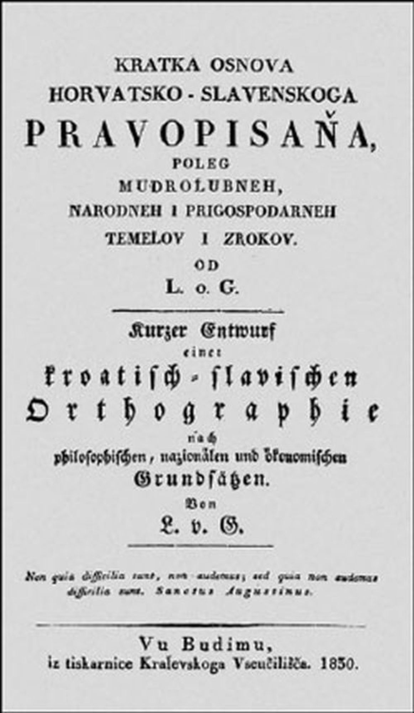
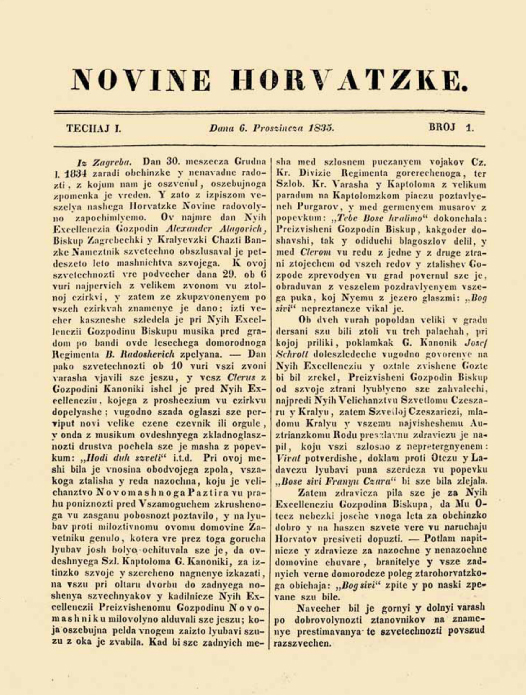
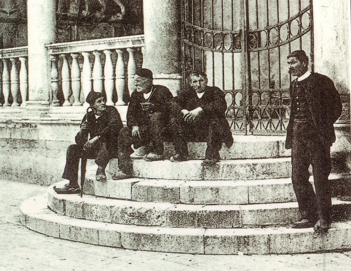
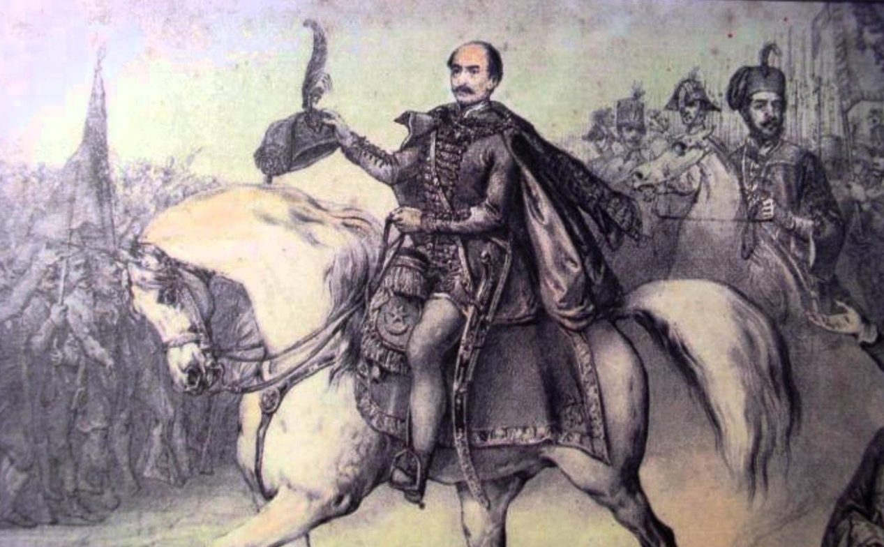
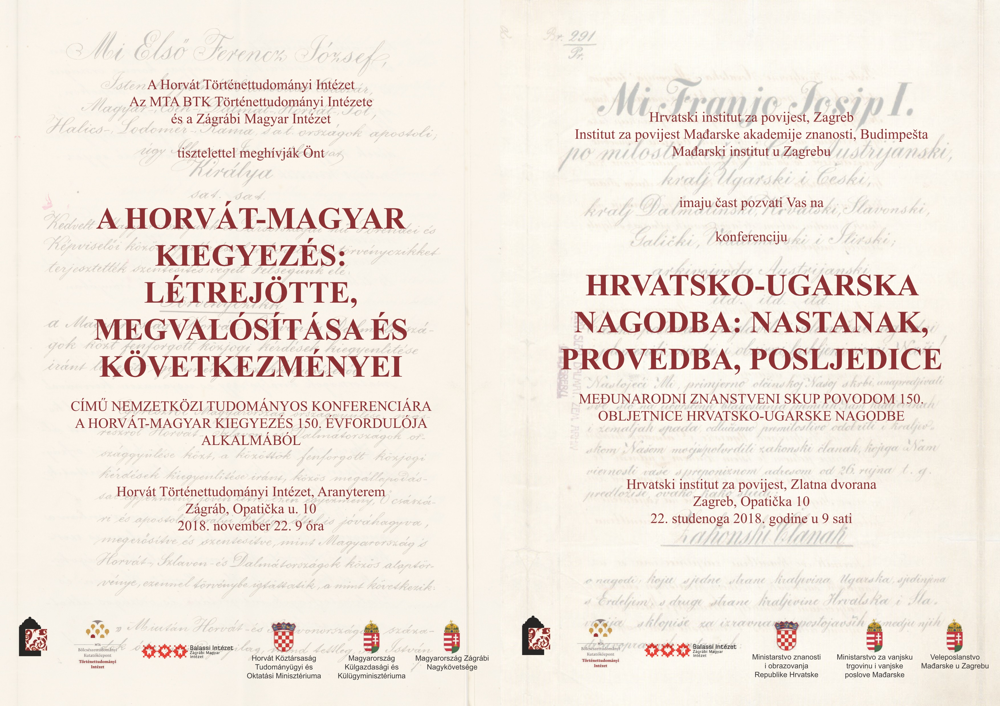
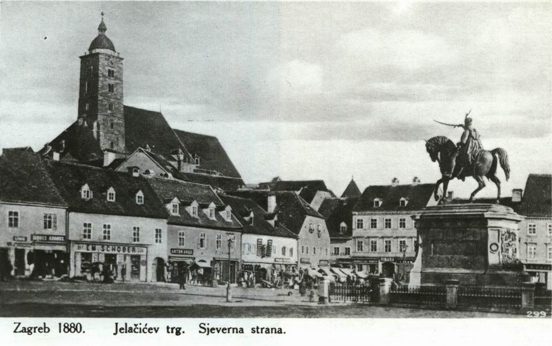

1830. – Gajeva pravopisna reforma

1834. – Ilirske novine

1847. – Hrvatski jezik postaje službeni

1848. – Revolucija i ban Jelačić

1868. – Hrvatsko-ugarska nagodba

Kraj stoljeća – političke stranke i modernizacija

Klikni na događaj
Odaberi događaj s lijeve strane za detaljan opis.